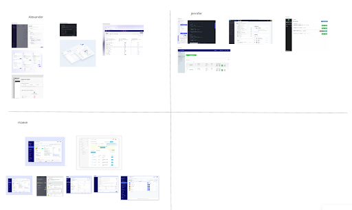

Maxis Workspaces - Deploy
A tool to reduce the amount of time it takes to deploy reports and applications.
I joined the Maxis development team when I first started at General Motors in January 2023. Maxis has multiple products related to sharing data and reports, as well allowing users to share scripts with their team members. One of the products is Workspaces, which is used to add members to an on-prem workspace and share data tables and Python code. When I first joined, I helped design the Deployment feature with the rest of the team. This feature took about one month to design and deploy. Once it was deployed, it was used by 500 people to automatically run scripts and update the data for their reports like in Power BI. We also added multiple smaller features for the version 2.6 cycle.
Deploy
The problem
From prior user interviews and feature requests, users wanted the ability to deploy low code applications from Maxis Workspaces to Maxis Consumers, where it would be available for other users to view for their analysis, helping people in HR, manufacturing, 3rd party sales, and more. Due to the timing of when I joined, I was not able to conduct any of the user research.
Research
My team and I first looked back at brainstorming sessions conducted by the developers and managers on the team, before I joined the team. To help us determine what belonged in the UI, me and the other designers had to understand how applications were provisioned in the back end, like what type of metadata and other inputs the users needed to include.


User Flow
After learning about the inputs we would need to successfully deploy an application, we created a user flow with Miro. First, each designer created their own idea of the flow, and then we collaborated to combine common steps from each of our user flows. This helps us consider all parts of the flow and prevents there from being too much bias from any one person’s idea of what the flow should be.

Inspiration
After learning the exact pages and inputs we need to design, we all find inspiration of similar products to create wireframes. We posted our inspiration in the shared Miro board so we can all see each other’s pictures and hopefully think of new ideas.
Low-fidelity wireframes
form that automates the deployment. Once submitted, the user would need to receive a link to a live application, hosted on Maxis Consumers. The user also needs the option to monitor, edit, and delete the deployment, along with seeing errors that occur in the process.
To accomplish these, we created two parts for the new design. The first part was creating a tab called ‘Deploy' where the user can monitor and manage their deployments, and also have the option to create a new deployment. The second part of the feature was the form the user needs to complete to create that application.
Each of us then designed our own idea for both parts of the design. After designing the low-fidelity wireframe options, we met with our stakeholders to have them vote on the elements of each design that they like. We also used this time to call out any remaining questions or blockers. Our Project Manager and Manager volunteered to help us with this process.


High-fidelity prototype
After the voting was completed, we combined the different elements we liked the most. We applied the existing Maxis Workspaces style using Adobe XD then created a prototype linking the screens together to show the interactive flow. Once completed, we checked with our managers so they could sign off on the feature and we could pass it off to the developers.
Deploy Tab homepage. Users can see associated application information and previous deployment history. They can select the ‘Create New Deployment’ Button to get started.

Step 1. Deployment Information. Here users add Application Admins and select the files they want to use for the deployment. I decided on the wording based on previous technical experience.

Step 2. Technical Settings. Users select Security group and association Business Channels and Applications from our other product, Maxis Consumers. The lists are auto populated.
Reflection
The deployment feature was successfully implemented and currently has around 500 users. This may not seem like a lot but the feature has gained the attention of users outside of the teams who were originally requesting this feature. I was satisfied with my first project working with the Maxis Team and the design process we followed. If I could change anything, I would have wanted to participate in the user interviews and workshops to hear first-hand about people's needs and ideas. There were a lot of notes available in shared, organized folders though so I was still able to understand the problem well.
- UX Design
- Competitive Analysis
- User Flows
- Collaboration
- Adobe XD
- Miro
-
Design
In Progress
-
Development
Todo
-
QA Testing
Todo